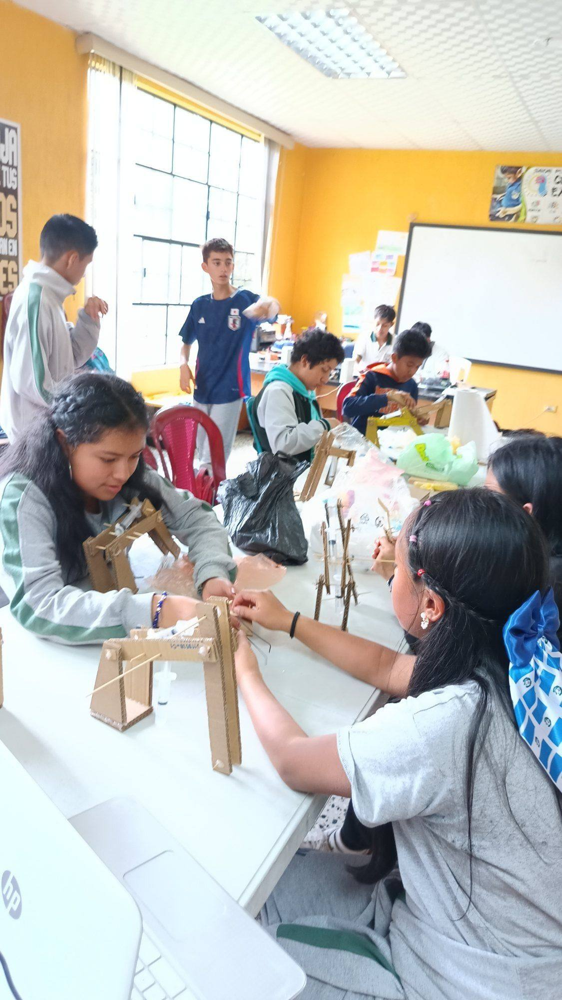

Por qué nuestro modelo funciona
Seis principios que guían cada sesión de Club Extra, cada beca y cada visita a una familia.
Calidad antes que cantidad, permanencia antes que inscripción
En Guatemala casi 90 de cada 100 niños que empiezan la primaria salen del sistema antes de la universidad. Nuestro enfoque está diseñado para ese tramo: que cada niño pase al siguiente nivel.
Acompañamiento de largo plazo
La ayuda temporal no funciona. Acompañamos a cada niño durante años, de Club Extra a la universidad, porque el reto no es entrar a la escuela sino quedarse en ella.
En su propia comunidad
Llevamos el aprendizaje a la aldea, con equipos, antenas de internet y la plataforma Chispa, para que nadie tenga que irse para aprender bien.
Con la familia
Detrás de cada niño que sigue estudiando hay una madre o un padre que decidió creer en él. Construimos con cada familia una relación que dura años.
Aprender haciendo
El Método CREA+ (Conecta, Resuelve, Experimenta, Argumenta y Mejora) pone a los niños a resolver problemas reales en lugar de memorizar.
Valores antes que cifras
Importa más el tipo de persona que formamos que el número de niños que pasan por un programa. Formamos en amor, integridad, innovación, colaboración y esperanza.
Liderazgo que se multiplica
Quien recibe una oportunidad aprende a crearla para otros: los participantes se convierten en voluntarios, y los voluntarios en facilitadores.
Lo que no hacemos y lo que sí
Ayuda temporal
- Entregas aisladas que terminan con la foto.
- Medir cuántos niños pasaron por un evento.
- Un futuro hecho, decidido por otros.
Acompañamiento GuateStar
- Relaciones de años con cada niño y su familia.
- Medir cuántos pasan al siguiente nivel.
- Talentos desarrollados para que cada niño decida hasta dónde llegar.
Lo que muestran los datos de 2026
- 7 de 7 becados que terminaron sexto primaria pasaron a básico.
- 10 de 10 becados que terminaron tercero básico pasaron a diversificado, el tramo donde más jóvenes abandonan en Guatemala.
- 6 de 7 graduados de diversificado llegaron a la universidad, en un departamento de baja cobertura universitaria.
- 83 % de los niños inscritos en Club Extra asiste cada semana.

Así se ve el enfoque en la práctica
Seis etapas, de Club Extra a la universidad, donde cada una abre la puerta a la siguiente.

Hay niños esperando que alguien crea en ellos
Conoce el impacto de tu apoyo, dona hoy o súmate como voluntario. Cada decisión cuenta.